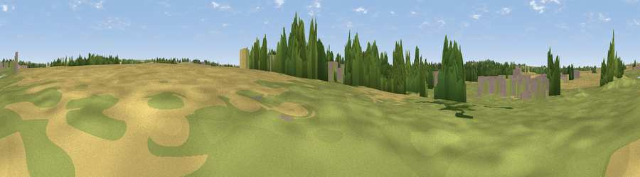

Land Rover Viewing Area
#45332 in England · top 93% of its area beats it · near HorncastleThe view, rendered

A 360° render of this exact spot computed from the terrain model, tree cover and land cover — summer colours, afternoon light, calibrated against photographs of famous viewpoints. Real trees, hedges and buildings will differ in detail.
The panorama
Grey silhouette: terrain skyline in each direction (720 bearings, Earth curvature and refraction included). Dashed green: skyline with trees (+15 m) and buildings (+8 m) as obstacles. Blue strip: how far the ground is visible on each bearing.
Where the view opens
Wedge length = distance to the farthest visible ground on that bearing (vegetation-aware). Rings at 10, 25 and 50 km.
What fills the view
43% grassland · 32% cropland · 15% built-up · 10% woodland
Angular shares of the visible panorama (visual magnitude), not map area. Landscape diversity 0.55 (0–1 Shannon).
Key numbers
More beautiful places nearby
The staircase of upgrades: each row has a higher view potential than everything closer. Driving times are estimates from straight-line distance, calibrated against real road routing — check an actual route before setting out.
| Place | Direction | Drive | Score |
|---|---|---|---|
| Langton Hill | SW · 2 km | ~5 min | 37.7 |
| Viewpoint near Baumber | NW · 4 km | ~10 min | 44.8 |
| Round Hills | ESE · 5 km | ~11 min | 51.1 |
| Hoe Hill | ENE · 5 km | ~11 min | 54.8 |
| Viewpoint near Fulletby | NE · 5 km | ~12 min | 57.9 |
| Warden Hill | ENE · 9 km | ~17 min | 59.5 |
| Viewpoint near East Keal | ESE · 13 km | ~24 min | 66.0 |
| Viewpoint near Claxby | NNW · 29 km | ~46 min | 71.5 |
53.21758, -0.10898 · source: osm viewpoint · position refined by local search. Computed location — check access rights before visiting.